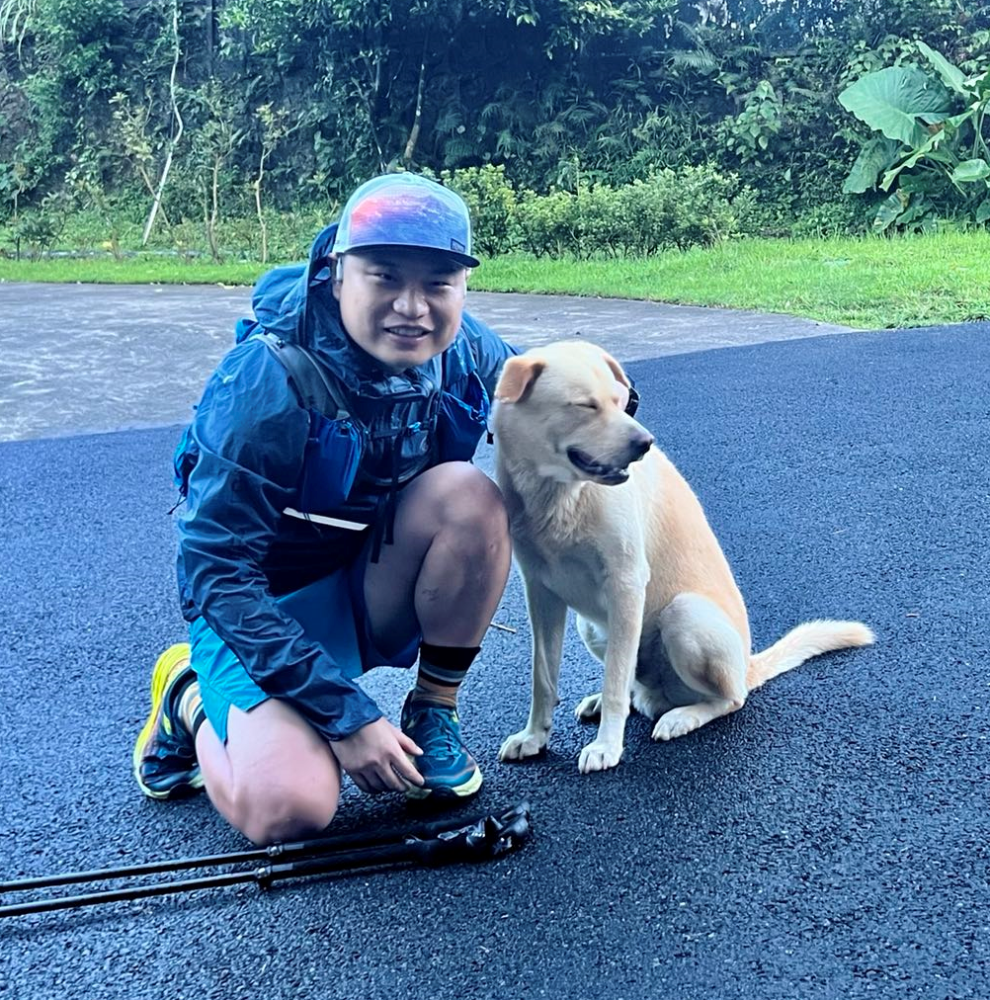

News
6 August 2022
Our Workshop paper "CI-OCM: Counterfactual Inference towards Unbiased Outfit Compatibility Modeling" is accepted by ACM MM.
29 June 2022
Our full paper "Counterfactual Reasoning for Out-of-distribution Multimodal Sentiment Analysis" is accepted by ACM MM.
16 July 2021
Our full paper "Response Generation by Jointly Modeling Personalized Linguistic Styles and Emotions" is accepted by ACM ToMM.
|  |
Teng Sun (孙腾)
iLearn Center
Email: stbestforever AT gmail.com
|
Teng Sun received his master degree in School of Computer Science and Technology from Shandong University, Shandong, in 2020. He is currently pursuing the Ph.D. degree with the School of Computer Science and Technology, Shandong University. His research interests include multimedia computing, cross-modal information retrieval and causal inference. Several works have been published in top forums, such as ACM MM and ACM ToMM.
Education
| Shandong University (SDU) Ph.D. in Computer Science and Technology, Sep. 2020 - Jun. 2023, Qingdao Advisor: Prof. Liqiang Nie Mentors: Prof. Xuemeng Song, Yinwei Wei and Prof. Fuli Feng |
| Shandong University (SDU) Master in Computer Science, Sep. 2017 - Jun. 2020, Qingdao Advisor: Prof. Liqiang Nie Mentors: Prof. Fuli Feng |
Experiences
| Intern Student, PengCheng National Laboratory, Apr. 2022 - Apr. 2023 |
Publications
In the Year of 2022:| CI-OCM: Counterfactual Inference towards Unbiased Outfit
Compatibility Modeling
Liqiang Jing, Minghui Tian, Xiaolin Chen, Teng Sun, Weili Guan, Xuemeng Song ACM MM 2022 (Workshop) • Codes&Data |
| Counterfactual Reasoning for Out-of-distribution Multimodal Sentiment Analysis
Teng Sun, Wenjie Wang, Liqiang Jing, Yiran Cui, Xuemeng Song, Liqiang Nie ACM MM 2022 (Full, Oral) • Codes&Data |
| Response Generation by Jointly Modeling Personalized Linguistic Styles and Emotions
Teng Sun, Chun Wang, Xuemeng Song, Fuli Feng, Liqiang Nie ACM ToMM (Full) • Codes&Data |
Professional Services
|
Invited Reviewer for ACM Multimedia in 2022 |
Oral in Conference
|
Counterfactual Reasoning for Out-of-distribution Multimodal Sentiment Analysis
- Lisbon, Portugal, October 10, 2022 |
Last update: 16 August, 2022. Webpage template borrows from Prof. Fuli Feng.